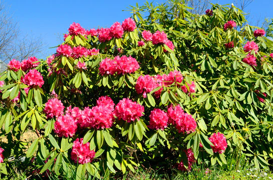

Forest Resouces Economic Significance
Forests are the foundation of many industries, including timber, processed wood, paper, rubber, fruits, etc. Forests supply various products and services, including food, fodder, lumber, rubber, latex, resins, waxes, steroids, lubricants, flavourings, dyes, incense, and fibres. Many of these substances may be acquired sustainably, which increases the forest’s long-term resource value. The economic value of forest biodiversity is enormous. The forest’s diverse flora and fauna are critical to several life-sustaining things, like medications and insecticides. Forests have economic value because they help to stabilize the environment. For example, forests that prevent soil erosion save a potential cost of erosion management.
Teak
Forest Resources Ecological Significance
Forest ecological services are environmental processes that directly benefit humans. Critical ecological services include carbon storage and absorption, watershed preservation, and biodiversity conservation. Plants absorb carbon from the atmosphere and return oxygen to the environment through photosynthesis. As a result, forests reduce and keep carbon out of the atmosphere. This maintains the earth’s suitability for life. Forests also have a significant impact on hydrological processes. Forests with large water absorption and retention capacity can sometimes convert irregular precipitation into a more consistent water flow from catchment areas. As a result, if forests are nearby, flooding due to extreme weather and rainfall may be reduced. Forests are essential for biodiversity as a habitat for other species. Forests are home to some of the most biodiversity-rich ecosystems on the planet. They provide habitat for an estimated 90% of threatened and endangered species. ... Read more at: https://www.studyiq.com/articles/forest-resources/
Watershed preservation
Forest Resources Socio-Cultural Significance
Millions of people live in forests worldwide, and many of them rely on forests for survival. Furthermore, many people have strong cultural and spiritual ties to the forests. Many indigenous people understand how to sustain and use forest resources because of their long-standing connection to forests. For example, Sundarbans woodcutters and honey collectors have developed traditional cultural practices for customary resource use. They ensure that young bees are never killed.
Honey in Sundarban
Types of Forest Resources in India:
Because of unique geographical locations and climatic diversities, the forest types of India are highly variable. A total of fourteen major classes of forest are found in diverse region of the Indian territories.
There are as follows:
In India, the Forests, on the basis of average annual rainfall, can be categorised broadly into five categories:
Tropical Evergreen Forests
- Region:Found in southern India along the Western Ghats, Andaman and Nicobar Islands and north-eastern region.
- Climatic Conditions:Found in warm and humid areas with an annual precipitation of over 200 cm and mean annual temperature above 22°C.
- Trees:In these forests, trees reach great heights up to 60 m or above
- There is no definite time for trees to shed their leaves, flowering and fruition; these forests appear green all the year round.
- Species found in these forests include Rosewood, Mahogany, Aini, Ebony, etc.
- The more common trees that are found here are the jackfruit, betel nut palm, jamun, mango, and hollock.
Moist Evergreen Forests:
Rosewood Trees
- Region:Found in the Shivalik Hills and foothills of the Himalayas up to a height of 1000 metres in the north.
- Found along Andhra Pradesh and Karnataka coast in the south.
- Climatic Conditions:Usually have a prolonged hot and dry season and a cold winter.
- Trees:Have mainly hard-leaved evergreen trees with fragrant flowers, along with a few deciduous trees.
- Trees have a varnished look.
- Some of the more common ones are the pomegranate, olive, and oleander.
Semi Evergreen Forests:
- Region:Found in the Shivalik Hills and foothills of the Himalayas up to a height of 1000 metres in the north
- Found along Andhra Pradesh and Karnataka coast in the south.
- Climatic Conditions:Usually have a prolonged hot and dry season and a cold winter.
- Trees:Have mainly hard-leaved evergreen trees with fragrant flowers, along with a few deciduous trees.
- Trees have a varnished look.
- Some of the more common ones are the pomegranate, olive, and oleander.
Dry evergreen:
Tropical Deciduous Forests (Monsoon Forests)
- Region:These forests are found in the north-eastern states along the foothills of Himalayas, eastern slopes of the Western Ghats and Odisha.
- Rainfall:Found in the regions which record rainfall between 100-200 cm.
- Trees:Tall trees with broad, branched trunks
- Some of the taller trees shed their leaves in the dry season.
- Teak, sal, shisham, hurra, mahua, amla, semul, kusum, and sandalwood etc. are the main species of these forests.
Moist Deciduous Forests:
Sandalwood Trees
- Region:Found throughout the northern part of the country except in the north-east.
- Also found in Madhya Pradesh, Gujarat, Andhra Pradesh, Karnataka, and Tamil Nadu.
- Rainfall:Covers vast areas of the country, where rainfall ranges between 70 -100 cm.
- Trees:As the dry season begins, the trees shed their leaves completely and the forest appears like a vast grassland with naked trees all around..
- Tendu, palas, amaltas, bel, khair, axlewood, etc. are the common trees of these forests..
Dry Deciduous Forests:
- Region:This type is found in areas with black soil: North, West, Central, and South India.
- Includes semi-arid areas of south west Punjab, Haryana, Rajasthan, Gujarat, Madhya Pradesh and Uttar Pradesh.
- Rainfall:The forests occur in the areas that receive annual rainfall less than 50cm.
- Trees:The trees do not grow beyond 10 metres and consist of a variety of grasses and shrubs. Spurge, caper, and cactus are typically found in this region.
- The plants remain leafless for most part of the year.
- Babul, Acacia, Kokko, Khair, Khajuri, Ber, Neem, Khejri, Palas, etc.are common species of the forests.
Thorn Forests
Babul Trees
Montane Forests
- Region:Occur in the northern and southern India.
- In the North, it is found in the region to the east of Nepal into Arunachal Pradesh, at a height of 1800–3000 metres, receiving a minimum rainfall of 200 cm.
- In the South, it is found in parts of the Nilgiri Hills, the higher reaches of Kerala.
- Trees:The forests in the northern region are denser than in the South.
- This is because over time the original trees have been replaced by fast-growing varieties such as the eucalyptus. .
- Rhododendrons, Champa and a variety of ground flora can be found here.
Montane Wet Temperate Forests:

rhododendron Trees
- Region: Found in north-western Himalayas (except Ladakh and Kashmir), Himachal Pradesh, Uttarakhand, Sikkim and Arunachal Pradesh.
Montane Subtropical Forests:

Pine Trees
Himalayan Forests:
- Region: Found in Jammu & Kashmir, Himachal Pradesh, Uttarakhand and northern hilly parts of Bengal.
- Elevation Found in the belt where altitude varies between 1000-2000 m.
- Trees: Oak, chestnut, chir, sal, shrubs and nutritious grasses.
Himalayan Moist Forests:
- Region:J&K, Chamba, Lahaul & Kinnaur districts (Himachal Pradesh) and Sikkim.
- Trees: Mainly coniferous; deodar, oak, chilgoza, maple, olive, mulberry and willow.
Himalayan Dry Temperate:
Alpine and Subalpine Forests:-
- Region: Found in Jammu & Kashmir, Himachal Pradesh, Uttarakhand and northern hilly parts of Bengal.
- Elevation In the higher reaches, there is a transition to Alpine forests and pastures occurring at altitudes of 2,500-4,000 m.
- Sub alpine forests extend from Kashmir to Arunachal Pradesh between 2900 to 3500 metres.
- Trees: In the Western Himalayas, the vegetation consists mainly of juniper, rhododendron, willow, and black currant.
- in the eastern parts, red fir, black juniper, birch, and larch are the common trees.

Black Juniper
Littoral/Swamp Forests
- Region: In the higher reaches, there is a transition to Alpine forests and pastures occurring at altitudes of 2,500-4,000 m.
- Other areas of significance are the Mahanadi, the Godavari and the Krishna deltas.
- Trees: Some of these forests are dense and impenetrable. Only a limited number of plants are found in these evergreen forests
- They have roots that consist of soft tissue so that the plant can breathe in the water.
- It consists mainly of whistling pines, mangrove dates, palms, and bulletwood.
- Mangroves in India:In India, the mangrove forests spread over 6,740 sq. km which is 7% of the world’s mangrove forests.
- The forests stabilise the shoreline and protect the coastal areas from erosion.
- Sunderbans along the Ganges delta is the largest tidal forest in the world.


{kind=link}